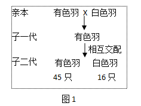
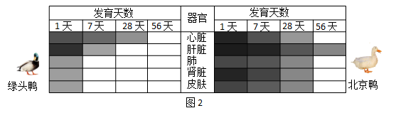
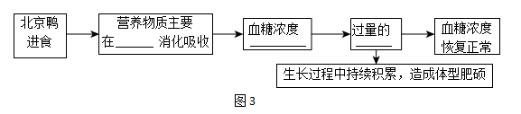

2023年北京中考生物 第29题 解析
29. 北京鸭由绿头鸭祖先种驯化而来，通身为白色羽、体型肥硕，而绿头鸭为有色羽、体型纤瘦。为研究北京鸭遗传和代谢的特点，科研人员开展相关研究。
（1）已知基因M与禽类 羽色相关。为确定羽色的遗传特点，进行图1所示杂交实验。据图1可知，有色羽和白色羽是一对______，其中______为隐性性状。
羽色相关。为确定羽色的遗传特点，进行图1所示杂交实验。据图1可知，有色羽和白色羽是一对______，其中______为隐性性状。

（2）家禽体型增大是提高肉质产量的前提。已知基因P能调节和控制禽类体型的大小。
①对绿头鸭与北京鸭中的基因P调控不同器官的情况进行研究，结果如图2，颜色越深表示调控强度越大。

据图2可知，与绿头鸭相比，北京鸭的基因P对上述器官的调控特点为______，使其在生长发育过程中体型变得肥硕。
研究表明，在基因P调控下，北京鸭和绿头鸭对饲料的利用率存在差异。表现为北京鸭进食量明显高于同龄的绿头鸭，但其血糖水平与绿头鸭的持平。
请据此推测北京鸭体型肥硕的原因，选填字母补充在图3中______，______，______。

a．食管（道） b．小肠 c．升高 d．降低
e．葡萄糖转化为脂肪等储能物质 f．葡萄糖氧化分解为二氧化碳和水
（3）综上所述，生物的性状是由______控制的，北京鸭的优良性状是遗传变异和人工选择的结果。若采用______技术，可将基因M或基因P转入家禽体内，以期改良家禽的性状。
【答案】（1） ①. 相对性状 ②. 白色羽
（2） ①. 强度大、时间长
②. b ③. c ④. e
（3） ①. 基因 ②. 转基因
【解析】
【分析】1．生物体的形态特征、生理特征和行为方式叫做性状，同种生物同一性状的不同表现形式叫做相对性状。
2．在一对相对性状的遗传过程中，子代个体出现了亲代没有的性状，则新出现的性状一定是隐性性状，由一对隐性基因控制。亲代个体表现的性状是显性性状，亲代的基因组成中既有显性基因，也有隐性基因，是杂合体。
3．转基因技术是把一种生物的某个基因，用生物技术的方法转入到另一种生物的基因组中，培育出转基因生物，就可能表现出转基因所控制的性状。
【小问1详解】
有色羽和白色羽是禽类毛色不同表现型，是一对相对性状。子一代是有色羽，子二代出现白色羽，则白色羽是新出现的性状，是隐性性状。
【小问2详解】
基因P能调节和控制禽类体型的大小。由图2知，北京鸭的基因P调控的强度比绿头鸭大，时间长，导致北京鸭在生长发育过程中体型变得肥硕。b小肠是消化食物和吸收营养物质的主要场所。北京鸭进食的营养物质在b小肠内吸收消化，食物中的糖类被吸收回到血液，体内血糖浓度c升高，此时胰岛素含量增加，促进血糖合成糖元，加速血糖的分解，从而降低血糖的浓度。若体内过量的e葡萄糖会被转化为脂肪等储能物质，在生长过程中，脂肪等储能物质持续积累，就造成体型肥胖。
【小问3详解】
生物体的形态特征、生理特征和行为方式叫做性状，由（1）（2）知，基因控制生物的性状。转基因技术指运用科学手段从某种生物中提取所需要的基因，将其转入另一种生物中，使与另一种生物的基因进行重组，从而产生特定的具有优良遗传性状的新品种。故若采用转基因技术，可将基因M或基因P转入家禽体内，以期改良家禽的性状。